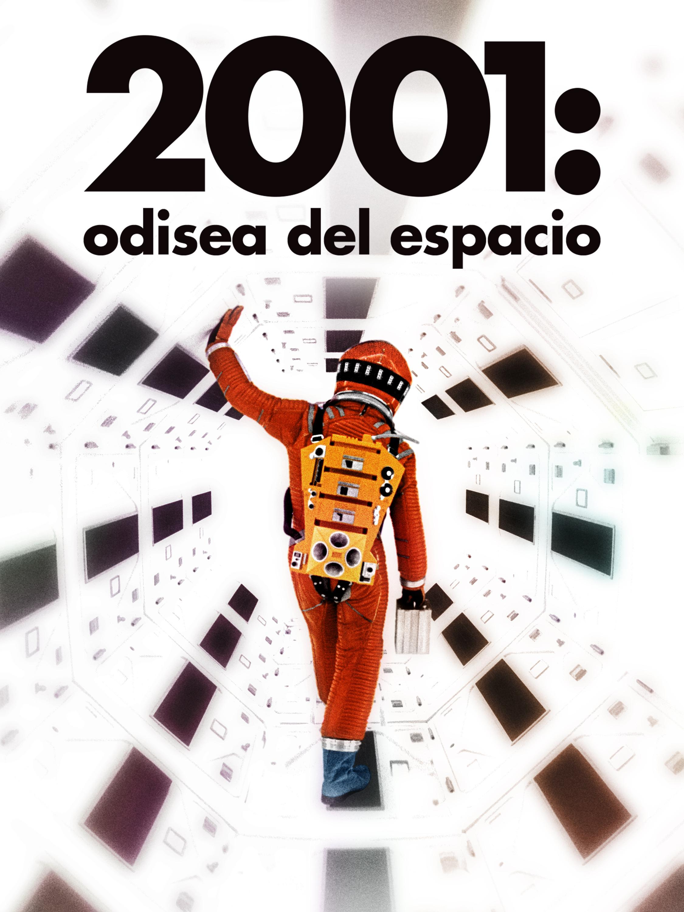
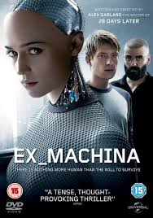
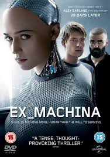
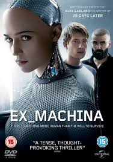
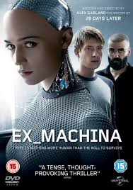

Películas destacadas

 


La inteligencia artificial ha transformado la pantalla grande y nuestras vidas.
La inteligencia artificial en el cine no solo aparece como temática en películas futuristas, sino también como herramienta en producción, guionización y efectos especiales. Desde clásicos como 2001: Odisea en el Espacio hasta producciones modernas, la IA ha inspirado mundos que mezclan la ciencia con la imaginación.
Explora dilemas éticos y futuros posibles gracias a la IA.
Se utiliza IA en efectos visuales, doblaje y edición automática.
Los espectadores se identifican con los retos humanos frente a la tecnología.

| Película | Año | Tipo de IA |
|---|---|---|
| 2001: Odisea en el Espacio | 1968 | Control de sistemas (HAL 9000) |
| Her | 2013 | Asistente virtual emocional |
| Ex Machina | 2014 | Robots humanoides |